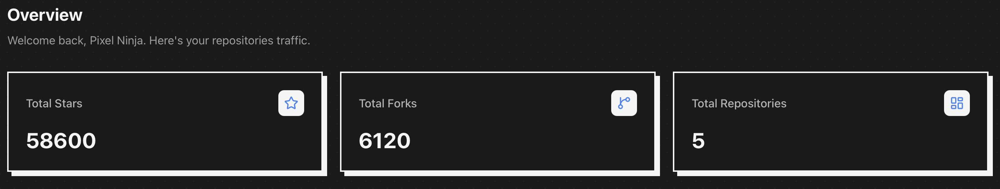
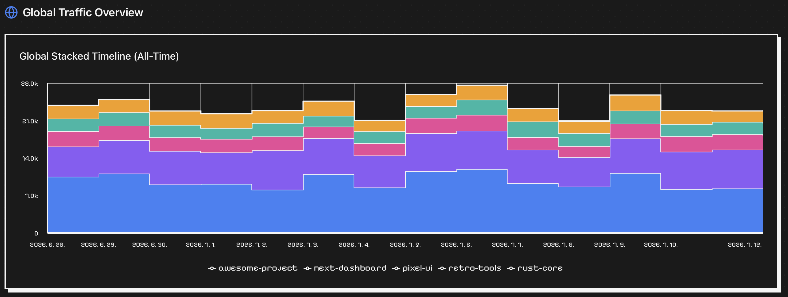
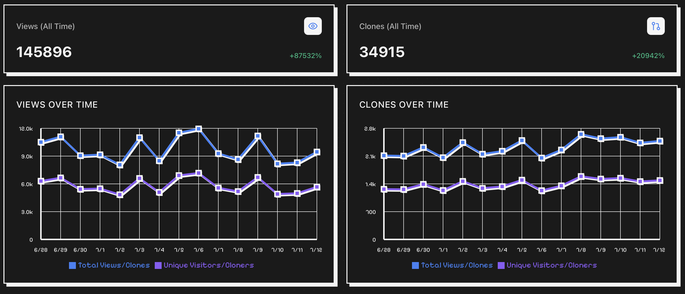
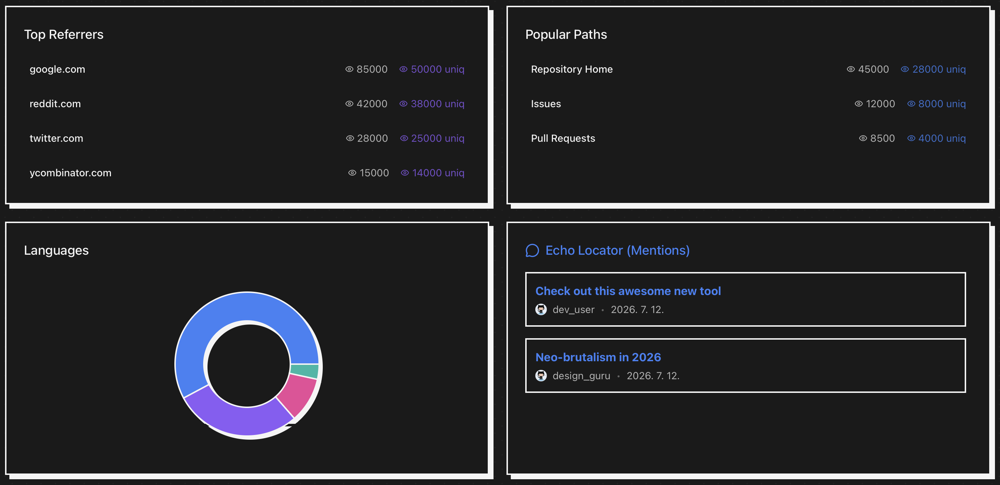

Repo-rter
Stop losing your GitHub traffic stats after 14 days. Keep your insights safe, locally and for free.
Fetching latest release...




Why Repo-rter?
GitHub only stores your traffic stats (views, clones, and referrers) for exactly 14 days. If you don't check or manually log them inside that window, that data is gone forever.
Repo-rter runs quietly on your desktop, automatically merging new data with your local history database to build an infinite timeline.
Features
Infinite Caching
Bypass GitHub's 14-day limit by permanently caching traffic data locally.
Neo-Brutalist UI
A beautiful pixel-art inspired aesthetic that makes tracking your repos a joy.
Markdown Export
Export beautiful traffic reports with a single click.
12 Languages Supported
Use the app in your native language. Currently supported:
🇺🇸 English
🇰🇷 한국어
🇨🇳 中文
🇪🇸 Español
🇫🇷 Français
🇩🇪 Deutsch
🇯🇵 日本語
🇮🇳 हिन्दी
🇸🇦 العربية
🇷🇺 Русский
🇵🇹 Português
🇮🇩 Bahasa Indonesia